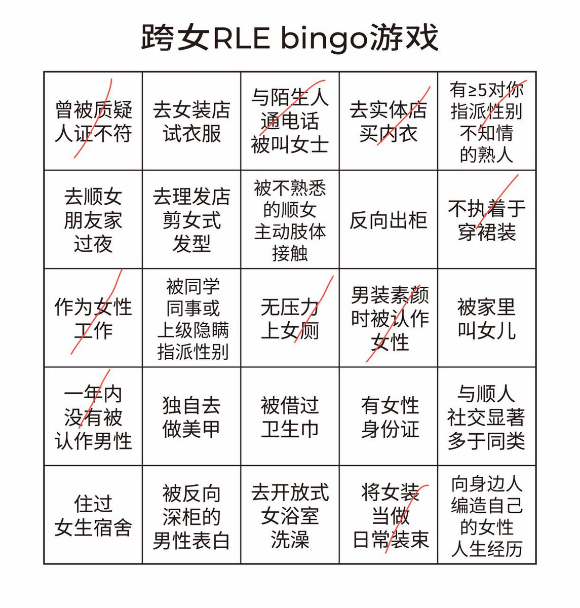

北雁冬翼（simone luxem）🏳️⚧️🏳️🌈🔬
@Simone_Luxem
笑）
不过我rle全都是在荷兰的事，这些问题好多都情景不符
而且我本身就几乎“非必要不社交”的类型，学校同学两年多下来基本上还是只认识土耳其妹子，有些东西对我实在搞笑了点…
至于表白什么的…err…我根本不认识啊…被搭讪/要联系方式确实有过，但表白真的算了吧…吓人…

Olivia🇸🇬🏳️⚧️⭕🍐🐸 水蜜桃绿茶爱好者
@OliviaWantsHugs
我咬手所以不美甲
除此之外真的就差最后一点了（画圈圈 https://t.co/tHIO1KgZZ8 https://t.co/NjZrqtOLN4